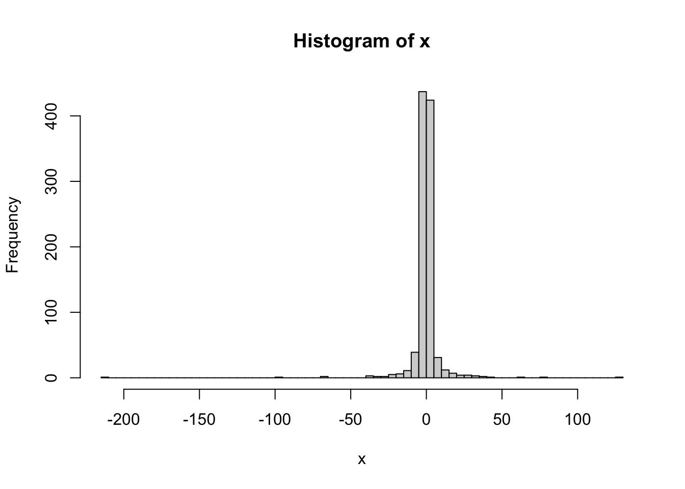
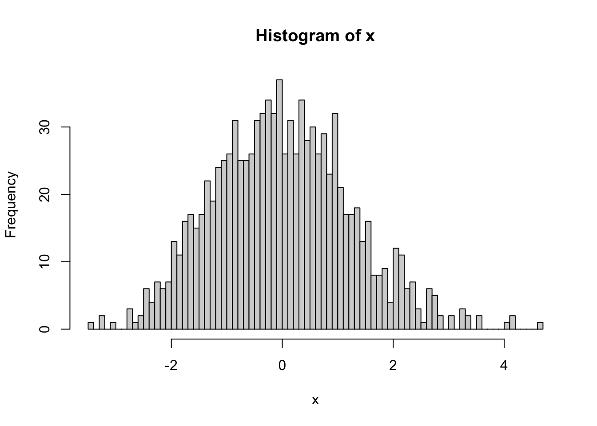
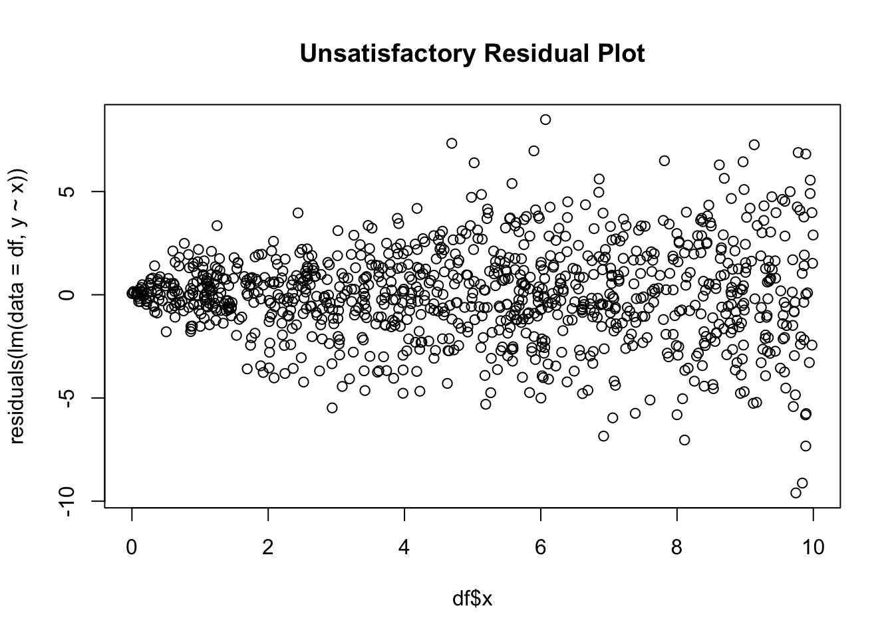
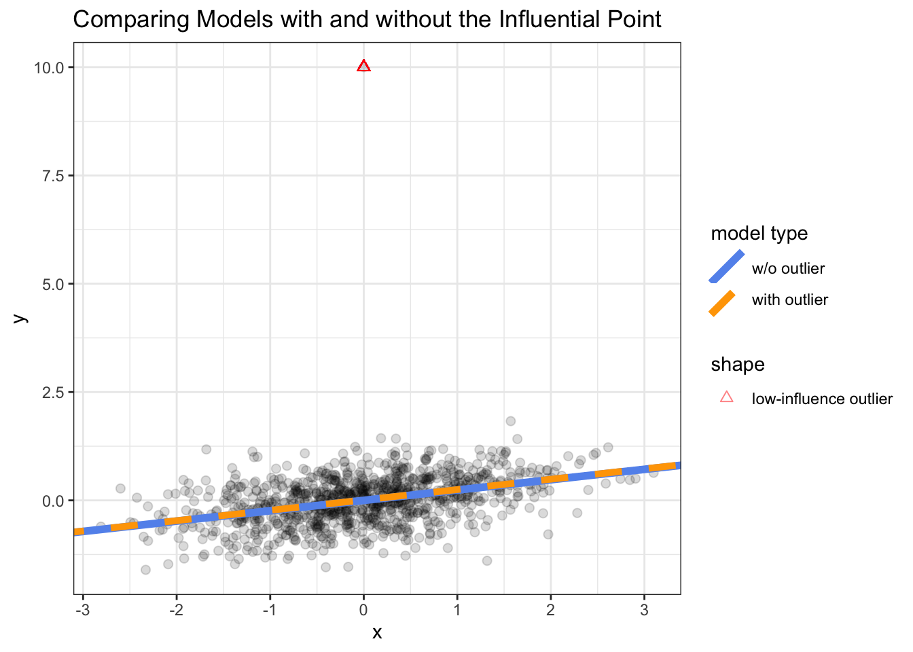
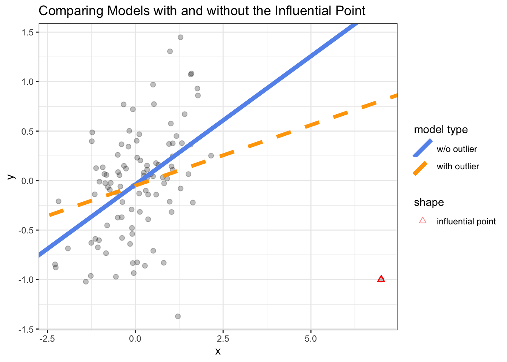
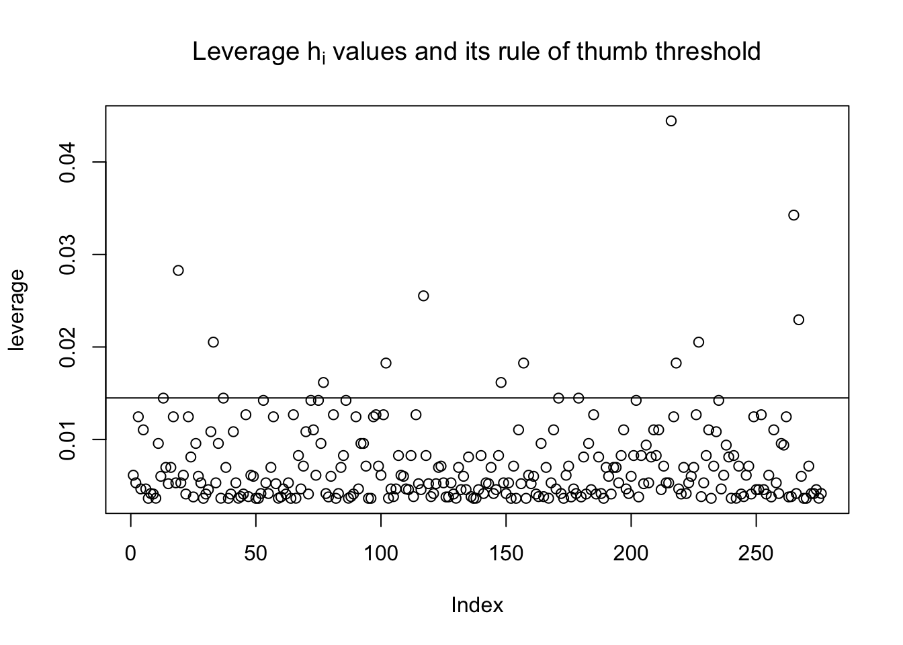
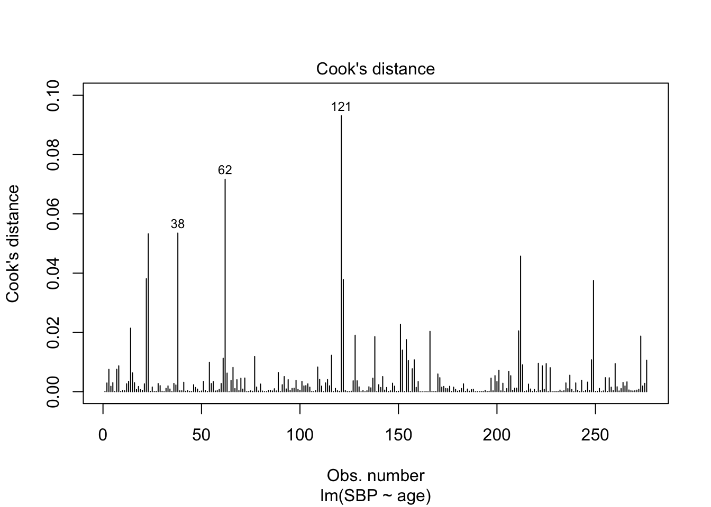

One can use either a sums-of-squares decomposition approach or a Wald test to test hypotheses about linear models. The sums-of-squares decomposition (equivalently called the F-test approach) is looking at if the amount of variability remaining is significantly increased compared to the amount of variation in the original model when reducing the model complexity. On the other hand, the Wald test is looking at the distance between the \(\hat \beta\)-parameters and the null hypothesis. Both of these approaches can do either individual or overall tests.
In the Wald test, we would write the Wald statistic as \[W = (C\hat\beta)'[\widehat{\text{Var}}(C\hat\beta)]^{-1} (C\hat\beta) \sim \chi_r^2.\]
For the sums-of-squares decomposition approach, we solve for the \(r\) coefficients in terms of remaining \((p+1-r)\), plug these into the full model to find the reduced model, and then use the \(F\)-test. Remember that in the \(F\)-test, the numerator can be thought of (or called) the “extra sums of squares.”
Multicollinearity
High correlation among predictors is called multicollinearity.
Generally, multicollinearity increases the standard errors of the regression coefficient estimates.
where \(r^2_j\) is the \(R^2\) value from a multiple linear model that regresses \(x_j\) on all other predictors.
Recall that in simple linear regression, one has that \(\text{Var}(\hat \beta_j) = \frac{\hat \sigma^2}{(n-1)s_x^2}\) where \(s_x^2\) is the variance of the \(x\). (This is how we showed that we prefer to have more variation in the \(x\)-values, all else being equal, because it helps make our estimates of \(\beta\)-coefficients more precise.)
The term \(1/(1-r^2)\) is known as the variance inflation factor (VIF), since \(\text{Var}(\hat \beta_j)\) is increased when \(x_j\) is highly correlated with the space defined by the other \(p-1\) covariates.
\(r^2\) will be large (close to 1) when there is multicollinearity in the \(x\)’s.
Thus we want to balance the advantage of putting in strong predictors to decrease \(\hat \sigma^2\) with adding predictors that are highly correlated with existing \(x\)’s in the model.
library(tidyverse)
── Attaching core tidyverse packages ──────────────────────── tidyverse 2.0.0 ──
✔ dplyr 1.1.2 ✔ readr 2.1.4
✔ forcats 1.0.0 ✔ stringr 1.5.0
✔ ggplot2 3.4.2 ✔ tibble 3.2.1
✔ lubridate 1.9.2 ✔ tidyr 1.3.0
✔ purrr 1.0.1
── Conflicts ────────────────────────────────────────── tidyverse_conflicts() ──
✖ dplyr::filter() masks stats::filter()
✖ dplyr::lag() masks stats::lag()
ℹ Use the conflicted package (<http://conflicted.r-lib.org/>) to force all conflicts to become errors
The relationships between the outcomes and a predictor, controlling for the other covariates in the model, is linear.
The \(\varepsilon_i\) have 0 mean, constant variance.
The \(\varepsilon_i\) are uncorrelated.
The errors are normally distributed or we have an adequate sample size to rely on large-sample theory.
In addition, we hope that model results are not driven by a small subset of observations.
We should always check fitted models to make sure these assumptions have not been violated.
Violations of these assumptions can
bias regression coefficients, and
bring the validity of \(p\)-values and confidence/prediction intervals into question.
For example, \(\text{Var}(\hat \beta) = \sigma^2 (X'X)^{-1}\), which relies on \(\text{Var}(\varepsilon) = \sigma^2 I_n\).
Recall that normality and uncorrelatedness imply independence in the case of the normally distributed error terms.
In generally, we may write \(e_i\) as estimates of \(\varepsilon_i\).
\[\hat \varepsilon_i = e_i = y_i - \hat y_i.\]
(We’ll use \(e_i\) because the hats get annoying for the upcoming content.)
The fitted values are \(\hat y_i = x_i'\hat\beta\) where \(x_i\) is the \((p+1)\times 1\) vector of covariates for subject \(i\).
Because \(e_i\) is an estimate of \(\varepsilon_i\), if the model holds we expect the \(e_i\) to exhibit the properties consistent with our model assumptions.
The Hat Matrix
Note that we can write \[\hat y = X \hat \beta = X(X'X)^{-1}X'y = Hy\]
where \(H = X(X'X)^{-1}X'\).
\(H\) is an \(n \times n\) matrix that is symmetric and idempotent (idempotency means \(HH = H\)).
\(H\) is called the “hat matrix” or “projection matrix,” and it pops up a lot in concepts or proofs related to linear regression. We’ll use the fact that \[e = y - \hat y = y - Hy = (I - H)y.\]
Geometric Interpretation of OLS using \(H\)
In linear algebra terms, \(H\) is an orthogonal projection matrix.
When multiplied by any vector, \(H\) orthogonally projects that vector onto the column-space of \(X\).
Thus since \(\hat y = X \hat \beta_{OLS} = Hy\), OLS regression can be viewed as projecting \(y\) onto the column space of \(X\).
Because it’s an orthogonal projection, \(\hat y\) will be the closest point to \(y\) on the column space of \(X\).
In the figure, the blue plane represents the column-space of \(X\), and the orthogonal components (or decomposition into a linear combination of basis elements) of \(\hat y\) is \((\hat \beta_1 X_1, \hat \beta_2 X_2)\).
The mean of the \(\{ e_i \}\) is 0 as long as there is an intercept in the model:
\[ \bar e = \frac{1}{n} \sum_{i=1}^n e_i = 0 \]
Note that to show this, start by writing \(\bar e = n^{-1} 1'(I-H)y\) and replace vector \(1\) with \(Xa\) where \(a\) is a \((p+1) \times 1\) matrix, \(a = (1, 0, 0, ..., 0)'\).
The estimate of the population variance computed from the mean squared error
\[MSE = \frac{SSE}{n - p - 1} = \frac{1}{n-p-1}\sum_{i=1}^n e_i^2\]
Although we’ve assumed that \(\text{Var}(\varepsilon_i) = \sigma^2\), note that the \(e_i\) are estimated quantities and \(\text{Var}(e_i) \neq \sigma^2\) (!).
We have shown that \[e = (I-H)y.\]
Thus the covariance matrix of the residuals is
\[\text{Var}(e) = \sigma^2(I-H)\]
We can see this by writing that
\[\text{Var}(e) = \text{Var}((I - H)y)\]
And \((I-H)\) is constant (only a function of the \(X\) values).
So \[\text{Var}(e) = (I-H)\text{Var}(y)(I-H)'\]\[ = (I-H)\sigma^2I_n(I-H)'\]\[ = \sigma^2(I-H)(I-H)'\]\[ = \sigma^2(I-H) \quad \text{ by the fact that } (I-H) \text{ is symmetric and idempotent}\]
The variance of the \(i\)th residual is
\[\text{Var}(e_i) = \sigma^2 (1-h_i).\]
where \(h_i\) is the \(i\)th element on the diagonal of the hat matrix and \(0 \leq h_i \leq 1\).
is a studentized residual and approximately follows a \(t\) distribution with \(n - p - 1\) degrees of freedom, assuming the model assumptions are satisfied.
If \(n\) is sufficiently large, these are approximately \(\mathcal N(0,1)\).
Residuals are correlated, but this correlation is minimal as long as \(n\) is sufficiently large.
In general, we’ve seen a few times that estimates divided by their standard error are \(t\)-distrbuted.
Residual (or studentized residual) scatterplot are useful for helping us identify
Non-normal errors
Non-constant variance
Violations of the assumption of linearity
Potential outliers
Plots of the distribution of the residuals help us assess normality (using histograms, boxplots, smoothed density plots, and normal probability [or Q-Q plots]).
In a normal Q-Q plot, the y-axis shows the ordered residuals. On the x-axis has the expected values of the order statistics for a normally distributed sample of size \(n\).
x <-rt(n =1000, df =15)hist(x, breaks =100)
qqnorm(x)abline(a =0, b =1)
x <-rcauchy(n =1000)hist(x, breaks =100)

qqnorm(x)abline(a =0, b =1)
x <-rlnorm(n =1000, meanlog =2.5, sdlog = .1)x <- x -mean(x)hist(x, breaks =100)

qqnorm(x)abline(a =0, b =1)
Check out the ggResidpanel and olsrr packages!
Transformations of the Outcome
Transforming the outcome is often a successful way to reduce the skewness of the residuals.
The idea is that often large values of the outcome yield the largest residuals.
Pulling these values back towards the center will yield a more symmetric distribution.
A popular transformation is to replace \(Y\) with \(\log (Y)\) where \(\log = \ln\)).
Other “power transformations” that are often effective are \(Y^k\) with smaller values of \(k\) pulling in the right tail more strongly.
hist(hers$LDL)
plot(lm(data = hers, LDL ~ BMI), which =2)
plot(lm(data = hers, log(LDL) ~ BMI), which =2)
These changes alter the interpretation of the model coefficients.
When the errors are heteroscedastic, this can invalidate inference in both small and large samples.
We can plot \(e_i\) vs. \(\hat y_i\) and look for changes in variance of \(e_i\) to get a sense of whether homoscedasticity holds.
Some people prefer to use the studentized residuals for this since technically \(\text{Var}(e_i) = \sigma^2(1-h_i)\).
As we will see later, \(h_i\) is small for most observations in the sample so in practice many argue this makes little difference.
lm.ldl <-lm(LDL ~ BMI, data = hers)plot(residuals(lm.ldl), main ="Satisfactory Residual Plot")
df <- tibble::tibble(x =runif(1000, min =0, max =10),y =rnorm(n =1000, sd =sqrt(x)))plot(df$x, residuals(lm(data = df, y ~ x)), main ="Unsatisfactory Residual Plot")

Assessing Linearity
Unless we add non-linear terms, linear regression assumes the functional form relating the mean of \(Y\) to \(x\) is a straight line. Violations to this assumption may occur for a variety of reasons including:
ceiling or floor effects
U or inverse-U shaped relationships (e.g., manganese is both a nutrient and toxin)
Claus Henn B, Ettinger AS, Schwartz J, Téllez-Rojo MM, Lamadrid-Figueroa H, Hernández-Avila M, Schnaas L, Amarasiriwardena C, Bellinger DC, Hu H, Wright RO. Early postnatal blood manganese levels and children’s neurodevelopment. Epidemiology. 2010 Jul;21(4):433-9. doi: 10.1097/ede.0b013e3181df8e52. PMID: 20549838; PMCID: PMC3127440.
In multiple linear regression, we want to assess whether it’s appropriate to assume linearity between a given \(x_j\) and \(Y\) *after conditioning on all the \(x_{-j}\).
Neither scatterplots of \(Y\) vs. \(x_j\) nor scatterplots of \(e\) vs. \(x_j\) allow us to appropriately evaluate this.
Partial regression plots are a tool that allow us to assess the form of the relationship between \(x_j\) and \(Y\) after conditioning on all the \(x_{-j}\). They are:
A variation of the plot of residuals vs. predictors.
Also called “added variable plots” or “adjusted variable plots”.
and we want to assess whether it is reasonable to assume linearity between \(x_1\) and \(Y\), conditional on \(x_2\) and \(x_3\).
To create a partial regression plot, we
Regress \(y\) on only \(x_2,\)\(x_3\) and obtain the residuals \(e_i(y|x_2,x_3)\). * What’s leftover in \(Y\) after conditioning \(Y\) after conditioning on \(x_2, x_3\).
Regress \(x_1\) on \(x_2, x_3\) and obtain the residuals \(e_i(x_1|x_2,x_3)\) * What’s leftover in \(x_1\) after conditioning \(x_2, x_3\)
Plot \(e_i(y|x_2,x_3)\) against \(e_i(x_1|x_2,x_3)\) and look for any nonlinearity * This is the association between what’s leftover in \(Y\) and \(x_1\) after accounting for \(x_2,x_3\).
# we can use car::av.plots(lm.hdl.bmi)lm.ldl.bmi.age <-lm(HDL ~ BMI + age, data = hers)car::avPlots(lm.ldl.bmi.age, main =expression(paste("Partial Regression Plot for E(HDL) = ", beta[0] + beta[1], "BMI + ", beta[2], "Age")))
Perks of partial regression plots:
If we fit a linear model to the data in the plot for \(x_j\), the slope estimate would be exactly the same as the estimated linear coefficient for \(x_j\) in the full model of \(Y\) (conditional on all variables)
This tells us that the plots are visualizing the same relationships that are being quantified in the full model
Caveats of partial regression plots
Can’t detect interactions between regressors.
The presence of strong multicollinearity can cause partial regression plots to be misleading.
Remedial measures for non-linearity
Could include polynomial terms, but these can behave erratically, particularly in the tails of the distribution.
Modern approaches and advice are to use splines or generalized (GAMs) to capture non-linearity.
Splines and GAMs can still be unreliable in regions of the predictor space with little data, but are generally more stable than polynomial models.
Won’t cover them here, but they can be easily operationalized within the linear model framework.
Usually need to visualize associations since we’re no longer fitting straight lines with a constant slope.
Outliers and Influential Points
Outlying observations with large residuals can have a disproportionately large effect on regression results.
We want to make sure regression results are not driven by only a few points.
These influential points could:
Cause associations between an \(x\) and \(Y\) that would be clearly significant with their inclusion to become non-significant.
Cause associations that would clearly not be significant without their inclusion to become significant.
If results are significantly impacted by the inclusion or exclusion of a small subset of points, this should be reported. Usually one should report results both with and without those influential points.
Possible explanations for outliers include:
“Bad” data that results from an explainable (or unexplained) event (e.g., misrecorded measurement, instrument malfunction, etc.). Only in the case when data are corrupted due to an explained event should one discard the observation. In the ideal case (unrealistic as it is), one would go back and try to retrieve the original data.
Inadequacies in the model. In this case, we would not want to exclude observations in any effort to make the data “agree overall with the model”.
Poor sampling of observations in the tail of the distribution — the data generating process may actually be long-tailed!
It tends to be the case that large \(x\)-outliers have much more influence (or leverage) than \(y\)-outliers.
We’ll use the terminology influential points for terms we’ve confirmed have high influence on a given regression. Otherwise we’ll use the terms high leverage points or outliers for points that are unique in some regards but unconfirmed as having large influence on our model.
# dataset with a low-influence outlier point df <- tibble::tibble(x =rnorm(n =1000),y = x*.25+rnorm(n =1000, sd = .5))df2 <-bind_rows(df, c(x =0, y =10))lm1 <-lm(y ~ x, data = df)lm2 <-lm(y ~ x, data = df2)ggplot(df2, aes(x = x, y = y)) +geom_point(alpha = .15, size =2) +geom_abline(mapping =aes(color ='w/o outlier',linetype ='w/o outlier',intercept =coef(lm1)[1],slope =coef(lm1)[2] ),size =2 ) +geom_point(aes(x =0, y =10, shape ='low-influence outlier'), size =2, color ='red', alpha = .5) +geom_abline(mapping =aes(color ='with outlier',linetype ='with outlier',intercept =coef(lm2)[1],slope =coef(lm2)[2] ),size =1.75 ) +scale_color_manual(values =c('w/o outlier'='cornflowerblue','with outlier'='orange' )) +scale_linetype_manual(values =c('w/o outlier'='solid','with outlier'='dashed')) +labs(color ='model type', linetype ='model type') +theme_bw() +scale_shape_manual(values =c('low-influence outlier'=2)) +ggtitle("Comparing Models with and without the Influential Point")
Warning: Using `size` aesthetic for lines was deprecated in ggplot2 3.4.0.
ℹ Please use `linewidth` instead.

# dataset with a high-influence outlier point df <- tibble::tibble(x =rnorm(n =100),y = x*.25+rnorm(n =100, sd = .5))df2 <-bind_rows(df, c(x =7, y =-1))lm1 <-lm(y ~ x, data = df)lm2 <-lm(y ~ x, data = df2)ggplot(df2, aes(x = x, y = y)) +geom_point(alpha = .25, size =2) +geom_abline(mapping =aes(color ='w/o outlier',linetype ='w/o outlier',intercept =coef(lm1)[1],slope =coef(lm1)[2] ),size =2 ) +geom_point(aes(x =7, y =-1, shape ='influential point'), size =2, color ='red', alpha = .5) +geom_abline(mapping =aes(color ='with outlier',linetype ='with outlier',intercept =coef(lm2)[1],slope =coef(lm2)[2] ),size =1.75 ) +scale_color_manual(values =c('w/o outlier'='cornflowerblue','with outlier'='orange' )) +scale_linetype_manual(values =c('w/o outlier'='solid','with outlier'='dashed')) +labs(color ='model type', linetype ='model type') +theme_bw() +scale_shape_manual(values =c('influential point'=2)) +ggtitle("Comparing Models with and without the Influential Point")

Quantifying Measure of Leverage
\(h_i\) (\(i\)th diagonal element of \(H\)) is known as the leverage of observation \(i\).
\(h_i\) is a measure of \(x_i\)’s distance from the center in the \(x\)-dimension. E.g., in SLR:
This is saying that units whose \(x_i\) is further from the mean tend to have the most influence on model fit/fitted values. The average value of \(h_i\) is \(\bar h = (p+1)/n\) over all \(i = 1, ..., n\).
A rule of thumb can be to classify observation \(i\) as a high leverage point if \[h_i > 2 \times \bar h = 2 (p+1)/n.\]
leverage <-hat(model.matrix(lm(SBP ~ age, hers |> dplyr::sample_frac(.1))))plot(leverage, main =expression(paste("Leverage ", h[i], " values and its rule of thumb threshold")))abline(a =2*mean(leverage), b =0)

Studentized Residuals
In order to quantify \(y\)-outliers, one might use studentized residuals.
Recall that if the model is correct, the studentized residuals are
\[r_i = \frac{e_i}{\sqrt{\widehat{\text{Var}} (e_i) }}\] should behave as \(\mathcal N(0,1)\) random variables and hence have constant variance. If the model is correct, we would expect \(-3 < r_i < 3\). Thus a residual satisfying \(|r_i| > 3\) warrants attention.
Back in the day, it was a bit unthinkable that one would fit a model \(n\) times as computational power was lacking, so analytic methods were derived to calculate these leave-one-out and jackknife approaches quickly.
Because \((n-p-1)MSE = (n-p-2)MSE(-i) + e_i^2/(1-h_i)\) (see KNNL Ch. 10), we can show \[r_{(-i)} = r_i \sqrt{\frac{MSE}{MSE_{(-i)}}} = e_i \left[
\frac{n-p-2}{SSE_{(-i)}(1-h_i)}
\right]^{1/2}\]\[ = e_i \left[ \frac{n-p-2}{SSE(1-h_i) - e_i^2\right]^{1/2}\]
Thus we do not need to refit the model \(n\) times to come up with the leave-one-out statistics.
Jackknife residuals have a mean near 0 and a variance of
\[\frac{1}{(n-p-1)-1} \sum_{i=1}^n r^2_{(-i)}\]
that is slightly greater than 1.
Outliers could be identified using similar thresholds to those used for studentized residuals (-3,3).
KNNL Ch. 10 also describes a statistical test for identifying outliers using jackknife residuals that are both probably overkill for most problems and perhaps a bit of a relic of the past now.
Because just one outlier can artificially inflate MSE, jackknife residuals are the preferred choice for identifying \(Y\)-outliers. In R, this is as simple as using rstudent(model.fit).
\(\hat y_{i(-i)}\) is the fitted value of \(y_i\) once observation \(i\) is removed from the dataset.
The denominator is the estimated standard deviation of \(\hat y_i\) and is based on the MSE calculated from the regression model fit when the \(i\)th observation is deleted.
Any obesrvation with \(|(DFFITS)_i| > 2 \sqrt{(p+1)/n}\) should be inspected closely.
KNNL Ch 10 shows that this measure can also be re-written to only use quantities from the model fit to the full data.
We can measure the influence of a point on the overall fit using its Cook’s Distance:
\[D_i = \frac{(\hat y - \hat y_{(-i)})'(\hat y - \hat y_{(-i)}}{(p+1)MSE}\]
where \(\hat y_{(-i)}\) is the vector of fitted values obtained once observation \(i\) is removed from the dataset.
It can be shown that \[D_i = \underbrace{\frac{\overbrace{e_i^2}^{\text{location in y}}}{(p+1)MSE}}_{\text{looks like a } F\text{-statistic}}\underbrace{\left( \frac{h_i}{1-h_i} \right)}_{\text{location in x}}.\]
Thus Cook’s D measures a point’s location both with respect to \(X\) and \(Y\) and can be computed using only the original model fit.
KNNL (p. 403) recommend comparing values of Cook’s D to an \(F(p+1, n-p-1)\) distribution to determine whether it is “large”. The numerator is clearly a squared normally distributed variable (by assumptions about \(e_i\)), and we already know the MSE to be \(\chi^2\) distribution.
If the percentile value is less than 10% or 20% then the \(i\)th observation has little influence on the fitted values. If it is up
plot(lm.sbp.age, 4)

What should be done about outliers?
Faraway (2002) recommends:
Check data entry errors first.
Check physical context — why did it happen.
Run analyses both with and without influential points. Always report if analyses are sensitive.
It is inappropriate to exclude outliers automatically.
In summary, residual diagnostics are useful for checking:
non-normality and heteroscedasticity of errors
non-linearity
outliers
Transformations are often useful for addressing apparent violations of the model assumptions.
Leave-one-out residuals allow us to check to see whether an outlier is concealing itself.
We can check the leverage and influence of a given observation using
Leverages \(h_i\)
Cook’s distance
DFFITS
DFBETAS
Lab
Multiple Linear Regression Diagnostics
Continuing with the matrix notation for MLR used in lecture and last week’s lab. The residuals \(e = (e_1, ..., e_n)'\) can be computed using the hat matrix \(H = X(X'X)^{-1}X'\):
Define \(h_i\) to be the \((i,i)\) value of \(H\). Then the residual for the \(i\)th observation has \(\text{Var}(e_i) = \sigma^2 (1-h_i)\). This leads to the studentized residual:
These are asymptotically distributed according to a \(t_{n-p-1}\) distribution under the model assumptions, which can be approximated as \(\mathcal N(0,1)\) for large \(n\).
The \(h_i\) values represent how far away from the centroid of the \(X\) values the \(i\)th observation is.
Residual Plots
Residuals are extremely useful to assessing model assumptions graphically.
Histograms (residuals should appear normal)
Q-Q Plots (residuals should follow a straight line, reflecting normality)
Scatter plots of residuals against \(\hat y\) or \(x_{ij}\) (should be a fluffy, patternless cloud)
Partial regression plots can also be used to assess the assumptions for each predictor on its own. To assess the assumptions for \(x_{j}\):
Regress \(y\) on \(\{ x_1, ..., x_{j-1}, x_{j+1}, ..., x_p \}\) and obtain residuals \(e_i(y|x_{-j})\).
Regress \(x_j\) on \(\{x_1, ..., x_{j-1}, x_{j+1}, ..., x_p \}\) and obtain residuals \(e_i(x_j|x_{-j})\).
Plot the residuals \(e_i(y|x_{-j})\) on \(e_i(x_j|x_{-j})\).
Outliers, Leverage, Influence
Outlying data points have the potential to greatly affect the slope of our fitted regression line. We can calculate several quantities for each data point to assess which ones either potentially or actually exert strong influence on our fitted model.
Leverage
The leverage of the \(i\)th observation is denoted with \(h_i\), and it measures how far observation \(i\)’s covariates are from the overall covariate average.
The average of \(h_i\) is \(\bar h = (p+1)/n\) so a rule of thumb is that if $h_i >
Leave-one-out or jackknife residuals can give us a better sense of the effect of leverage: let the \((-i)\) subscript denote a quantity from the model refit without the \(i\)th observation.
These residuals have mean near 0 and variance slightly greater than 1.
Cook’s Distance
How much does inclusion/exclusion of one particular value affect all of the predictions?
\[D_i = \frac{\hat y - \hat y_{(-i)}^T(\hat y - \hat y_{(-i)})}{(p+1)MSE} =
\frac{e^2_i}{(p+1)MSE}\left( \frac{h_i}{1-h_i}\right) \]
\(D_i\) values can be compared to a \(F_{p+1,n-p-1}\) distribution; observations with percentiles on this distribution above 50% have high influence. We are not saying they should be distributed according to this \(F\) distribution. As a rule of thumb, a Cook’s distance value is considered large if \(d_i > \frac{4}{n-2}\).
DFFITS
How much does the inclusion or exclusion of a particular observation affect the prediction for that value?
Points with \(|DFFITS_i|>2 \sqrt{\frac{p+1}{n}}\) should be investigated. DFFITS value patterns should be close or identical to Cook’s distance since they are conceptually similar.
##DFBETAS
Whereas the previous quantities assessed each point’s impact on overall model fit, the \(DFBETAS_i\) statistic quantifies how much a particular coefficient \(\hat \beta_k\) changes if we delete a particular observation \(i\).
The number is presented in standard error units of how far the “new” \(\hat \beta_k\) falls from the “old” \(\hat\beta_k\), so an observation can be considered influential if the absolute value of the \(DFBETAS\) exceed 1 (for smaller data sets) or \(2 / \sqrt{n}\) for larger data sets.
Dealing with Outliers
Do not just exclude outliers. There is no rule of thumb that can be used to automatically discard observations.
Consider data measurement errors, data entry errors, coding oddities, etc.
Consider physical plausibility of measurement and goal of study.
Run the analyses with and without the observation; Report both if they differ substantially.
Exercises
Prove that \(\text{Var}(e) = \sigma^2(I-H)\). Hint: derive the values of \(I^T\), \(H^T\), \(II\), and \(HH\) first.
Define the trace of an \(n \times n\) square matrix \(S\) as \(tr(S)= \sum_{i=1}^n s_{i,i}\), the sum of the diagonal elements.
Prove that for any \(m \times n\) matrix \(A\) and an \(n \times m\) matrix \(B\), \(tr(AB) = tr(BA)\). Use that to prove that traces are invariant to (finite) cyclic permutations. Then conclude that \(\bar h = \sum_{i=1}^n h_i/n = (p+1)/n\).